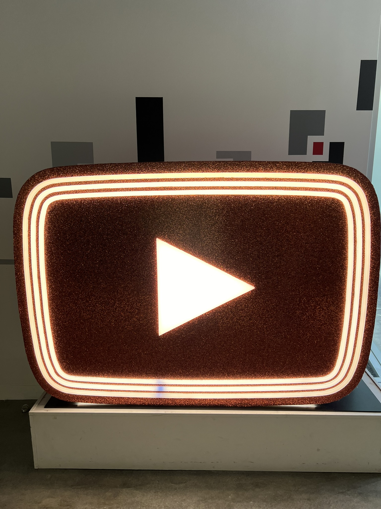
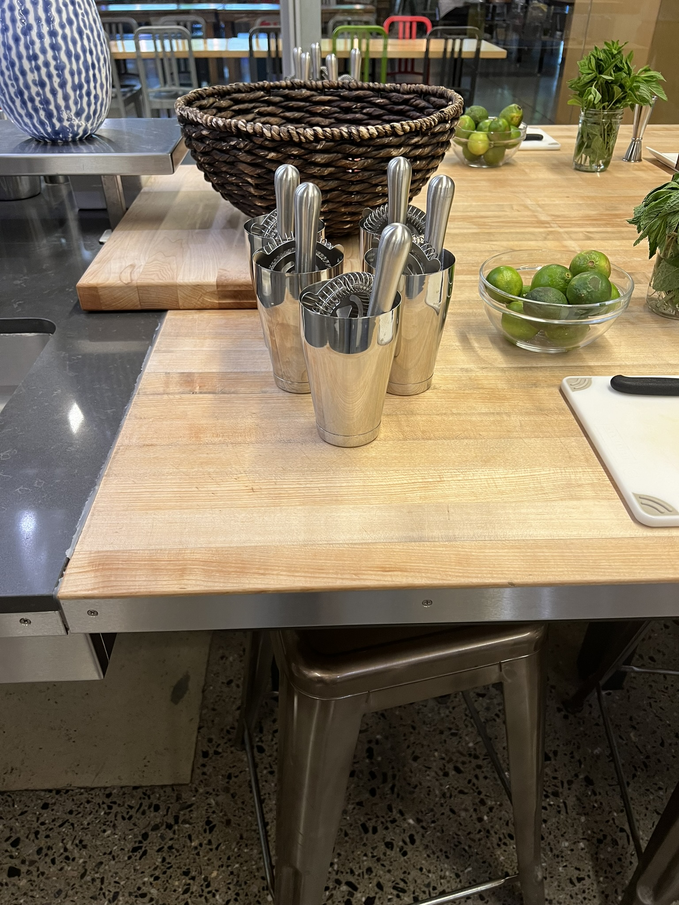
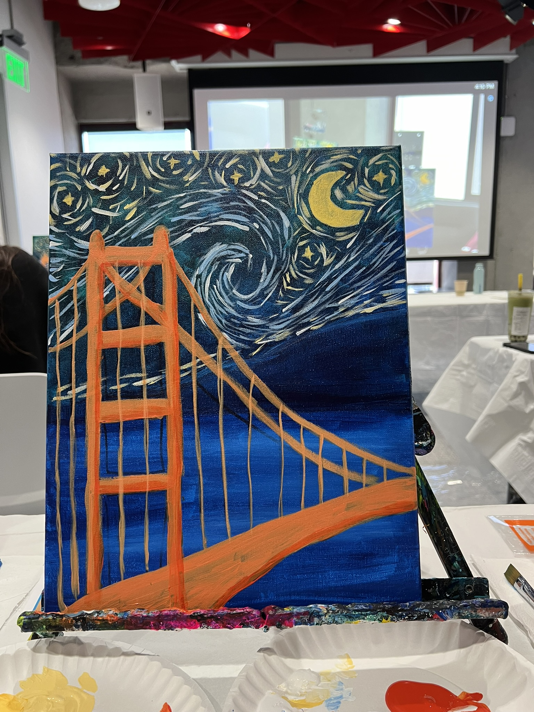
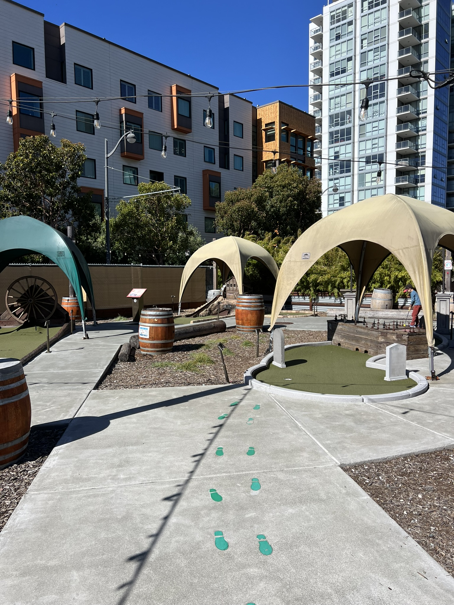
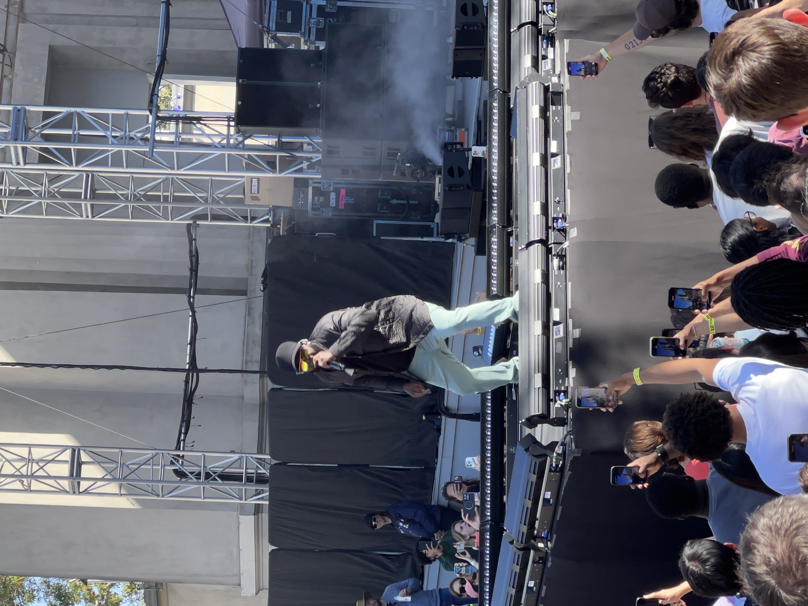
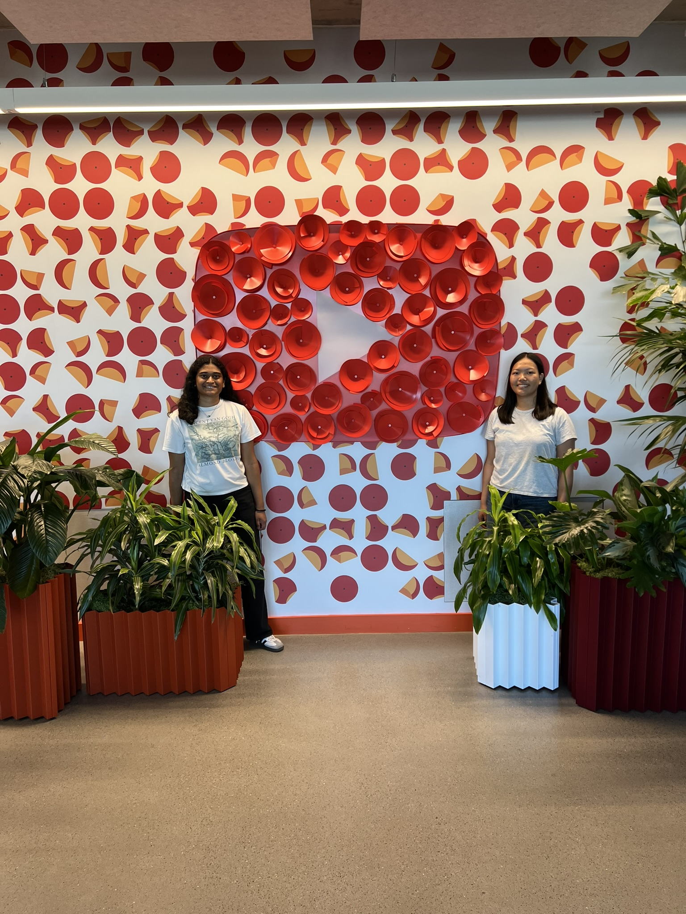

Software Engineer Intern
Overview
This was my second internship at Google, and I had an amazing experience building on the skills I learned over the school year and what I learned in my previous internship. This summer I was on the YouTube Music team, and was assigned to build the frontend for a new feature on the YouTube Music app and also integrate the frontend with the backend built by another engineer on the team.
This internship was a lot different than the first. I had more ownership over my project, more freedom with it, and overall was able to work with more people and develop something that was more user-facing. I also had the opportunity to work with a lot of different teams across YouTube and Google, which was a great experience to learn about the different roles and teams in a large tech company. I also had the opportunity to go through the test and launch process for a feature, which was a new experience for me and taught me a lot about the software development lifecycle at Google.
The project I was given was to build the frontend for lyrics translation on both iOS and Android. I built the frontend for the feature using Java, Objective-C, Typescript, C++, and some internal development framework. The most interesting part of the project was being able to do it from scratch. In the beginning, I met with the UI/UX designer on the team to discuss the vision for the feature, and I communicated frequently throughout the 12-weeks to ensure that she was up-to-date with what the feature was looking like, and that we were all happy with what the feature is turning out to be, and that her expectations were aligned with what I was building. I also had a lot more cross-team interactions, as I also needed to work with the team behind the development framework language for the app to explain what changes I wanted to make to add more functionality to the frontend.
Overall, this internship was a great experience. I was able to learn a lot more about the software development lifecycle, and also work with more languages and parts of the codebase than I had in my previous internship. I truly appreciated the creativity and flexibility I had with this project, and I was able to learn a lot about how to manage a project and work with different teams to build a feature from scratch.
What I learned
- How to build a feature from scratch and manage it throughout the development lifecycle
- How to effectively communicate and collaborate with different teams across YouTube and Google
- How to quickly learn and utilize new programming languages and tools
- How to build a user-facing feature and optimize it for performance and user experience
Technologies Used
- Java
- Objective-C
- Typescript
- Internal cross-platform development framework
- XML
- C++
Photos
Some highlights from my internship





